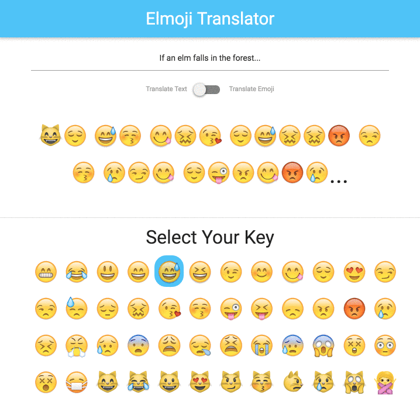

Choose Your Own Emoji
For this lesson, we'll allow our users to choose which emoji to use when encoding their messages. That way, they can send secret messages to each other that can only be decoded if they have the right key! It will eventually look like this:

There's a lot to do! Let's do this!
Note: Your code should currently look like the code in Part4.elm. You can either carry your code over from the last lesson, or start fresh with Part4.elm.
Goals
- Use transformation functions to render dynamic HTML.
- Use complex
Htmlfunctions to render conditional classes. - Model a domain using tagged values.
- Implement a full feature from start to finish.
Steps
Adding New UI Elements
As we did with our last lesson, let's start first by updating our view with our new UI elements. The eventual markup should look like this:
<!-- code for text input and lever -->
<div class="divider"></div>
<section class="container">
<h4 class="center">Select Your Key</h4>
<div class="row">
<div class="col s2 m1 emoji-size">
<div class="key-selector">😁</div>
</div>
<div class="col s2 m1 emoji-size">
<div class="key-selector">😅</div>
</div>
<!-- ... -->
</div>
</section>
Take a crack at converting this to Elm. Some of this is straightforward — we already know how to render static elements with attributes and children using the Html module. We also already have a list of all supported emojis in EmojiConverter.supportedEmojis. But how will we render all those emojis without a lot of copying and pasting?
Elm shines in situations like this. Since view is simply Elm code, and Html.Html is just another type in Elm, we can use normal transformations to produce HTML. We can use EmojiConverter.supportedEmojis in combination with the List module to convert that list of emojis into a list of HTML elements!
The code in view can use a helper function to render all emoji keys, like this:
-- ...
[ Html.h4
[ Html.Attributes.class "center" ]
[ Html.text "Select Your Key" ]
, renderKeys
]
And we can write renderKeys to iterate over the list of supported emojis and call another helper function, renderKey.
renderKeys =
Html.div
[ Html.Attributes.class "row" ]
(List.map (\emoji -> renderKey emoji) EmojiConverter.supportedEmojis)
It's worth taking a moment to explain what List.map is doing. Much like Array.prototype.map in JavaScript, List.map takes a function and a list, calling the function on each element on the list and returning a list of the produced values. The (\... -> ...) syntax is how you define an anonymous function in Elm.
If you want to learn more, the List module is thoroughly documented on package.elm-lang.org. The site is a great resource if you want to learn more about the public API for available Elm packages and core modules.
Now, it's your turn! Add the new markup to view, with the renderKeys and renderKey helper functions.
Displaying the Currently Selected Key
There's one more part of the UI that we have to render — we have to display the currently selected key as selected. If we give the specified emoji .key-selector a class of .is-selected, it will display with a blue background. For now, we'll
hard code the selected key to defaultKey.
When you have to conditionally attach classes to an HTML element in Elm, the Html.Attributes.classList function is helpful in simplifying the code. The function consumes a list of tuples, with each tuple containing a string (representing a class) and a boolean (describing whether the class should be attached to the element). The code for rendering the .key-selector element might look something like this:
Html.div
[ Html.Attributes.classList
[ ( "key-selector", True )
, ( "is-selected", emoji == defaultKey )
]
]
[ Html.text emoji ]
Once you've added that code to your renderKey function, you should have a working, if static, UI!
Adding User Actions
Now that we've updated the UI, we have to map our new user action to a message for our application to consume. Add the following line of code to your renderKey function, as an attribute to the element with a class of .key-selector:
Html.Events.onClick (SetSelectedKey emoji)
When this element is clicked, a Msg of SetSelectedKey String will be triggered, which will eventually be consumed by our application.
Like SetCurrentText String, SetSelectedKey String is a tagged value. In effect, we are saying that SetCurrentText and SetSelectedKey are only valid values of the Msg union type if they are accompanied by a string.
Tagged values are helpful for modeling systems with uneven information requirements. For instance, if we were modeling a coffee shop, we might structure our data like this:
type BrewingStrategy = PourOver | FrenchPress
type Milk = Cow | Soy | Almond
type alias NumberOfEspressoShots = Integer
type DrinkOrder
= BlackCoffee BrewingStrategy
| Latte NumberOfEspressoShots Milk
| HotChocolate Milk
| ColdBrew
Apparently, there's a lot of complexity bundled up in our drink orders! In some cases, we need to know what kind of milk the customer wants. In other cases, we need to know information specific to only one kind of drink. The above data model accounts for that complexity by using tagged values — a HotChocolate is only a valid DrinkOrder if it is accompanied by a Milk selection, and a BlackCoffee relies on another union type to determine the customer's preferred brewing strategy.
We could have also modeled this problem with a record, but the data would have likely been harder to follow. What would the .milk field on that record mean, if the customer wanted black coffee? Why would we need a .numberOfEspressoShots in order to make a hot chocolate?
Tagged values are also helpful in preventing bad data from propagating through our system. For instance, a drink order of "single shot latte" isn't enough in the real world — if we tried to make it, we wouldn't know what kind of milk our customer wanted. Tagged values protect us here — if we tried to use Latte 1 in a function that was expecting something of the type DrinkOrder, our code would fail to compile.
So let's wire up our new tagged value to update! In order:
- Add the aforementioned
onClickattribute to the.key-selectorelement. - Add the new
SetSelectedKey Stringvalue toMsg, and ensure thatupdatehandles the new case. - Find a way to store the key information on the model, perhaps in a new field called
selectedKey. - Ensure that you the model initialization logic still works. We should start off the application with a
model.selectedKeyvalue ofdefaultKey. - Implement the
SetSelectedKey Stringcase ofupdate, so that it updates the model with the correctselectedKey.
That's a lot! Work slowly, and lean on your compiler for help. If you get stuck, you can see a completed version of this step in Part7.elm.
Displaying Model Values
Now that update consumes our new message, we need to reflect changes to the model onto the UI. First off, we need to use our new model.selectedKey field to display to the user which key is currently selected. As of now, our renderKeys function does not consume model, so it has no idea about the current state of the application. Let's change that! renderKeys should look like this:
renderKeys model =
Html.div
[ Html.Attributes.class "row" ]
(List.map (\emoji -> renderKey model emoji) EmojiConverter.supportedEmojis)
You will have to change the call site of renderKeys in view to match the new signature of the function, and you will have to change renderKey to consume a model. Once that's done, you can use model.selectedKey in place of defaultKey when checking whether a key is selected. The UI should now show you which key is selected, as you click on them!
Changing our Cipher
And now, for the final step — we need to change our translation key based on the value of model.selectedKey! When you're done, your application should work like this:

You definitely know enough Elm to figure this out for yourself. However, if you get stuck, check out the working solution in Part6.elm.
And with that, you've completed your first Elm application!